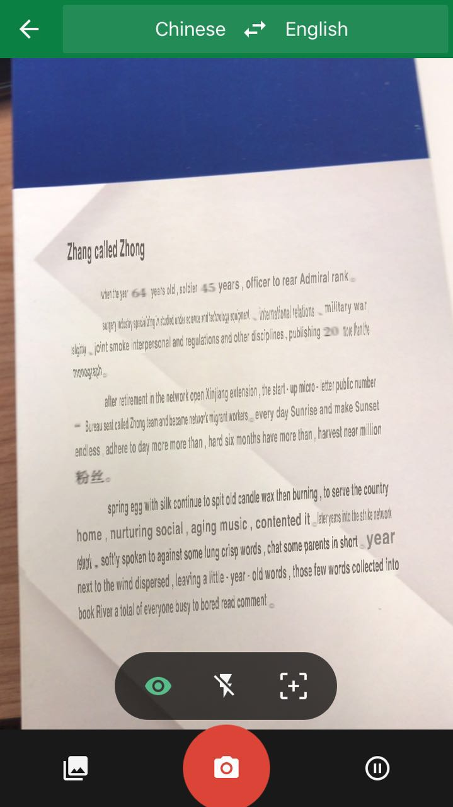
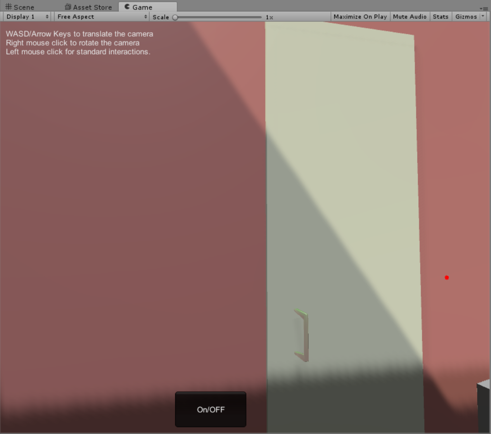

Week1: different platform for Virtual and Augmented Reality
HTC VIVE:
In my opinion, one of the advantages of Vive is that it requires a real space rather than creates a virtual space.To explore the space, we
need walk in the space or change the body posture. This makes the virtual circumstance more engagable and immersive. Another point is that
the Vive handle gives us the real feedback of the object we touch or seize. This character gives much more interaction with the virtual world.
Last but not the least, as a potential developer, Viveport is open to all developers under the submission guidlines and tech standards.
One of the disadvantages is obvious, it requires a space to perform if we do not want to destroy anything in our home like the video shows in the class.
Most applicable: art, creativity, design, education, health, etc.
HoloLens
The most amazing thing of HoloLens is that it is controled by gesture. Through the game in HoloLens, we can see that the gesture control is
sensitive enough for entertainment and education researches. The phd student showing the demo told me that she has developed an application
that shows information of a patient by looking at his or her face through HoloLens. It is widely applied in medical field.
The disadvantage of HoloLens is also obvious: we have to look at the virtual space from some fixed, specific point. I believe that if the
observing point is flexible, HoloLen can be much more popular. Also I think the interaction between human and machine is too weak as a VR access.
Most applicable: entertainment
CAVE2
I have been in CAVE2 for a lot of times and this impressive work always has different unique projects to show. The advantage is that in CAVE2
the 360 degree circumstance with surround sound is shocking real. The device is simple, just a pair of 3D glasses, and a motor control handle.
Tracked by the sensors on each screen, the handle gives navigation in the virtual reality, which makes it easier to exhibit the models,
datas, research cases, etc.
Disadvantage? Maybe too expensive for normal applications. Also a powerful computer is required to control all the screens.
Most applicable: science researches, art.
Quiver
The most accessible application of all the demos. Easily used and developed.No headset needed. A lot of fun.
Disadvantage is that it is basically designed for children, which means it is limited in academic and research fields.
Most applicable: children's application
NYTVR
According to the Times, most users will be able to watch the films in 4K resolution.the app supports virtual reality playback for Google Cardboard as well as playback of 360-degree video for mobile touchscreen navigation.
Google Cardboard is a cheaper access for VR. It can be viewed with or without device.
Disadvantage may be that it lacks interaction with users.
Most applicable: social media, tourism.
Week3: some thoughts on AR translation
Here goes some screens that google translate in different degrees of success.
Original:
Translated:

From the screens we can see the fact that the completeness of translation might vary due to different distance between angles and distances to the characters. Font of the characters
may be different. Google translation, the application, has the solution of the problem. It takes photos and let the users highlight the text. Yet things might change when it comes to
a real time access.
Now suppose that we have an AR product, i.e. a pair of glasses or headset, with the function automatically translating a specific language to another language and replacing the original text from the real
world, it sounds really covenient. So the benefit is that it is an easy access to AR translation. Think about the case that you are reading an article in another language, things get
much easier when you put on your AR device. With pattern recognition, everything is translated into the desired language.
The defect of the technique is also obvious. We can see the success of the translation may be in different degrees due to the distance
and angle changes. Nobody wants to move the steps and nodding his or her head to adjust the text for translation. This makes the AR translation device narrowly applied
Another point is that since it replace the original text, the font may be mixed and messed up and the meaning of the words might change.
In order to overcome the problems, the user should have the control of angle and distance to the text as well as the align of the text to get better effect on
translation. The user need to adjust the distance and angles using some handheld devices. Also for more effecient access, the user needs to highlight the intended
part of text using some devices.
Week4: Walking small
Here goes some screens that things in virtual circumstances in different scales.
Experience virtual reality in different scales is unique. Before I scale up, everything looks normal. Although it takes me some time to
adapt the world which looks not exactly like the real world.
After I scale up the world, it takes me a while to adapt the new world. I can see low resolution on some of the sideling edges. While the vertical edges does not change.
Some textures, upon the light, changed after the sclare is changed. Colors may change a little bit.
I also notice that there exits some a scale that makes the virtual circumstances looks most real, which is not 1:1.
The characteristic can be used in some situations where details need to explore. For example, a murder scene can be made as virtual reality. We can notice details when we
scale up the circumstance, such as a hair or a snail. Another example of the technology, more close to science researches, is that we can explore something that we are not able
to enter, such as a brain, a lung, an organ, or a group of gas, the solar system, etc. Overall, scaling in virtual reality can benefit the science a lot.
PROJECT1
Here is the linkd to my youtube video:https://youtu.be/XvDInegeZPQ
I have started with the general model of EVL and build my desire office.The purpose of the project
is to create a virtual reaistic world in practice so that I can have better understand how the
process goes, how VR works and have deeper experience about VR. In my application, we can explore
and collect things and throw them away, also we can turn the light on and off
I referred to a lot of materials to finish the project. Mostly, the source codes are from https://www.evl.uic.edu/aej/491/evl%20491.zip
and unity3d.com. Some of my assets are found from asset store. https://www.assetstore.unity3d.com.
Here is my link: https://drive.google.com/drive/folders/0BwDejtfdn3XPUXIzVWpaQmhEbk0?usp=sharing
I CREATE 11 things by my own. Most of them are done by Blender.
a door:

a cup and a dish:
a lamp:
a brush pot and a pencil:
a mouse and a mouse pad:
a trash bin:
a paper ball:
a chair:
a ballon:
All of my 5 audio clips are from http://soundbible.com
Background music is Parakeet Talking. The sound that a lamp hits something is sword strike.
When a book touches things, page_turn mark. There is also a click music when the light is turn
on and off. Also the paper ball shoots around and sounds punch when collision.
Discussion
Compared to navigation using teleporting, I prefer the wand-based navigation. We have to set a several
teleporting points for navigation. That make things feel like locked. And at some angles, we cannot
even see the things directly.While wanded-based navigation would be much easier. At least
it makes me feel freedom.
Compared to the actual room, except for the fake models I made, we can notice they are different.
Not only the size but the textures make people feel unreal. Also Light, physics and sounds help a lot in the virtual
circumstance.Things change a lot with these parameters. What can hardly be replicate in the virtual
world is the texture. We can always tell the difference between kicking a fake trash bin in VR and kicking
a real one.
Week6: classmates' projects
Peter Hanula's project
https://uofi.app.box.com/s/vwqx5toz0r8qd00vr851i4dgaon715g7
One of the projects I love most is this one. It contains a lot of fancy models including cats that interacts with users with cat sounds which make
the office interesting.
In my project, I have used not much interaction as his project. I like the light control switch with a feedback to users
interaction. These can be achieved through an easy function called OnCollision(). I should have done more works about it. The fancy ceiling is also an attraction.
Timoth Choh's project
http://gpoulo3.people.uic.edu/CS491/TimothyChoh_proj1.zip
This one did great job combining a huge amount of models into an office without weird feelings.
It is really simple to add those models. Also I like the sounds interaction attaching on the models.
The sounds of the fan and television make it real in a VR circumstance. The light control is realized
through a buttom. I like the trash bin and the feeling when stuff was put into the trash bin.
All of these makes the circumstance real.
Projects
Course projects goes below.

Project 2

Project 3
About Me